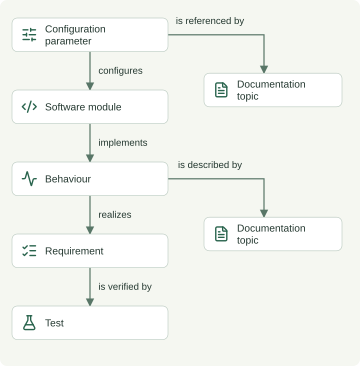

Impact Analyzer: from engineering change to review plan
A small tool that helps engineers and technical writers identify what may need review when a product setting or behaviour changes—and inspect why each item appears.
The demo models a fictional industrial coffee machine. All data is synthetic.
The problem
Product knowledge is spread across software, behaviours, requirements, tests, and documentation. When something changes, a reviewer needs specific targets and evidence connecting those targets to the proposed change.
Modelling the connections
The graph contains 15 entities across six artifact types. Explicit relationships describe how a parameter configures software, how software implements a behaviour, and how tests verify requirements. Documentation is modelled as individual topics, so the results identify specific content to review.
Relationship meaning and review policy are separate. For example, the stored relationship behaviour → implementedBy → module can be followed backwards and shown as module → implements → behaviour. Only approved relationship directions are followed.

From proposed change to review plan
A reviewer selects a setting or behaviour, enters a proposal, and runs the analysis. The results separate engineering artifacts from documentation, with a review question and an expandable connection path for each candidate.
Raising the brew target from 93°C to 95°C returns four engineering artifacts and two documentation topics:
| Candidate | Why it appears |
|---|---|
| Temperature controller | Configured by the parameter |
| Brew temperature regulation | Implemented by the controller |
| Brew temperature tracking requirement | Realized by the behaviour |
| Brew temperature tracking test | Verifies the requirement |
| Set brew temperature | References the parameter |
| Brew regulation specification | Describes the behaviour |
A pressure-setting scenario exercises a separate pump-control branch. Both branches reach the same regulation specification, but traversal stops at documentation, so the shared topic does not pull unrelated engineering artifacts into the result.
Beyond a numeric setting
The behaviour scenario proposes requiring five continuous seconds within temperature tolerance before brewing starts. It begins at the behaviour and reaches its implementing module, requirement, verifying test, and documentation topic. Modules terminate traversal for behaviour changes, preventing shared implementations from expanding the review into unrelated behaviours.
Current and proposed descriptions remain visible. The optional text comparison shows separate sentences with subtle highlights. Review questions are predefined guidance: authored for the stored example or general questions for a custom proposal. They are not automatically inferred engineering conclusions.
From candidates to review findings
Candidates default to Needs change as a demo starting state, not a proven conclusion. Three icon buttons let reviewers select Needs change, Needs investigation, or No change needed directly. Investigation opens the note editor; no-change cards become grey and compact. The status counts filter the card list without excluding items from the report.
An expanded Markdown report updates as statuses and notes change. It includes the proposal, timestamp, status totals, findings, and connection paths. No-change items are summarized together with any notes. A copy icon lets reviewers paste the report into a change ticket. Enter finishes a note; Shift+Enter adds a line break.
The initial centered card moves into a left sidebar when a change type is selected. Clearing the type restores the card. Controls fade in sequentially; results reveal in groups sized to the viewport, respecting reduced-motion preferences. A conditional table of contents helps navigate the results. Findings are kept for each proposal while the page is open; refreshing clears them.
Why documentation matters
Set brew temperature directly references the parameter and states its current default. Brew regulation specification is reached indirectly because it describes the related behaviour. These connections identify different reasons to review content.
A connection warrants review; it does not prove an artifact must change. A requirement stated relative to the configured target may still be valid at 95°C.
Implementation and validation
The browser uses plain HTML, CSS, JavaScript, and local Lucide icons. It loads the public JSON model and runs validation and graph traversal locally, so hosting needs no Python server, API, or database. Python remains the reference engine for the command-line interface and optional local API. Scenario suggestions and authored review questions are stored in the model.
Automated Python, JavaScript parity, and HTTP checks cover exact candidate sets, stored relationship evidence, separate engineering branches, metadata validation, API consistency, dataset preservation, and unchanged proposals. Complete browser results are compared against the Python reference, including custom proposals and shared-module boundaries. An unchanged value or matching behaviour description returns no candidates. Browser checks have also exercised the interface, visual paths, and text comparison.
Lessons and limits
- Define relationship meanings before selecting traversal rules.
- Keep explanation evidence available for reviewers.
- Use documentation topics to make review targets specific.
Scope
This portfolio learning demo explores entities, explicit relationship graphs, and explainable review selection in a single-user application ready for static hosting. It supports numeric parameter changes and textual behaviour changes in a synthetic coffee-machine model. Requirements and tests are review targets; they cannot currently be selected as change starting points.
Graph limitations
- Recorded links determine coverage. If the tracking test exists but its “verifies” relationship is missing, the analyzer omits it. An explanation proves a recorded path exists, not that the review list is complete.
- Text does not create dependencies. Mentioning pump control in a proposal does not connect it to the pump controller. The word-level diff compares wording; it does not infer engineering consequences or semantic equivalence.
- Traversal follows a bounded policy. Shared modules and topics do not automatically expand into unrelated branches. These boundaries are review rules, not a complete model of causality.
- One shortest path per candidate. Additional valid paths and review reasons are omitted.
- Topics, not paragraphs. The shared specification is identified for review, but the graph does not locate the affected passage.
- Structural validation is not factual validation. Correct types and references do not establish complete or accurate relationships.
The tool does not simulate physical outcomes or establish feasibility or safety. Real product data and review-time savings have not been evaluated. Findings are temporary and clear when the page refreshes or closes. Saving reviews, collaboration, requirement-change inputs, and integration with the separate alerts project are outside the current demo scope.
Try it
Open Impact Analyzer to explore setting and behaviour changes. Read the original case-study document for the project narrative and source-document references.